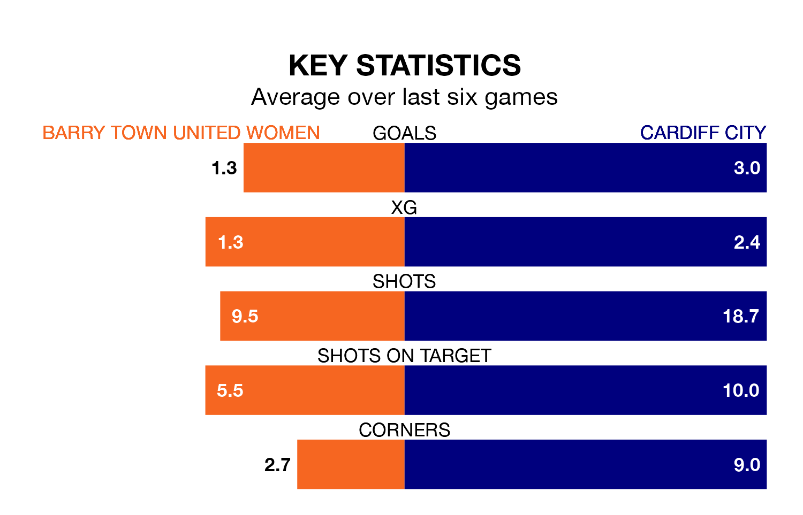

Cardiff City travel for Sunday's early match against Barry Town United Women looking to bounce back from defeat last time out in Welsh Premier Women's League.
Cardiff, who sit top of the league after 12 games, fell to a 1-0 home defeat to Pontypridd Town on January 28.
They face a Barry Town United side who picked up a win in their last match, a 1-0 victory against Cardiff Metropolitan, and who sit sixth in the table.
With 38 goals in 12 games so far this season, Cardiff are the league's highest scorers with 3.2 goals per game. And they are conceding fewer than average, letting in five goals at a rate of 0.4 per game.
Barry Town United, meanwhile, are below average scorers, with 1.2 goals per game, compared to a league average of 1.8. They have conceded 2.7 goals per game.
The hosts are in mixed form in Welsh Premier Women's League, with three wins and three losses from their last six games.
With five wins and one loss over that period, City's form is much better – they have taken 15 points from 18, compared to Barry Town United's nine.
In the last five years, Barry Town United and Cardiff have played each other on five occasions. Cardiff won all of them.
On average, Barry Town United scored 0.4 goals and Cardiff 3.8 in those matches.
Their last meeting was on October 29, when Cardiff won 6-1 at home.
Updated: 13:20 (UTC), 29/01/24